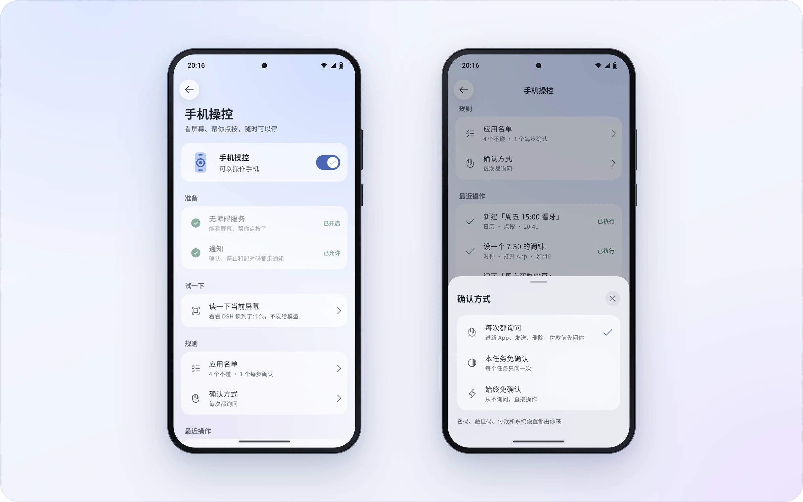

页面读不到，不能解释成没变化
DSH Go的手机操控依赖界面可读内容来判断按钮、输入框与操作结果。1.0.5针对一个容易误导下一步的问题改了反馈：安卓敏感视图策略可能过滤密码、支付和验证页面，客户端不再把空内容简单归为游戏或自绘界面，也不声称屏幕没有变化，而是指出可能受系统限制并引导接管。这时不再盲目点击或滑动。它保留了系统阻止读取的含义，让用户知道代理在哪里失去观察能力；不能因为任务目标尚未完成，就把不可见区域当作正常可操作页面继续猜。
DSH Go 1.0.5 · 社区项目 · 维护者版本更新

DSH Go的手机操控依赖界面可读内容来判断按钮、输入框与操作结果。1.0.5针对一个容易误导下一步的问题改了反馈：安卓敏感视图策略可能过滤密码、支付和验证页面，客户端不再把空内容简单归为游戏或自绘界面，也不声称屏幕没有变化，而是指出可能受系统限制并引导接管。这时不再盲目点击或滑动。它保留了系统阻止读取的含义，让用户知道代理在哪里失去观察能力；不能因为任务目标尚未完成，就把不可见区域当作正常可操作页面继续猜。
动作发出去以后，如果前后两边都没有可比较的内容，新版会直接说已经提交、但现在无法验证结果，而不是把它写成没有变化或列表到底。键盘弹出收起、窗口边距改变也会进入变化判断，截图附带系统时间戳，帮助区分较早的画面和当前状态。聊天层的选项卡还可由模型开启自由填写，让用户不受预设答案限制；漏写专用围栏的卡片JSON也能恢复为原生卡片，复制或分享时转成一行摘要。两类修改都把原始输出整理成可理解的状态或可继续的输入，减少用户猜测代理究竟接受了什么。
此前一天的1.0.4把DSH Remote改成自动选择连接方式：先尝试局域网或点对点，再尝试TURN，最后中继；这些路径需要相应主机和服务器支持。用户点击连接卡的网络标签，可看实际路径、建立耗时、测得的往返延迟和回落原因。重连会清掉旧测量，不把之前网络的数据当成新连接结果。会话、工作区和插件属于各自主机，切换主机会断开前一个连接。远程方式适合继续电脑上的任务，但它目前只支持图片附件，应用内网页模式、部分插件管理和日志导出等能力与本机不同，不能只看一个聊天界面就假定功能完全相同。
首次启动可在手机安装Ubuntu、Node.js和DSH运行环境，或只连接已有电脑，后者不需要手机装一套引擎。作者说明无需Root或另装Termux，提供安卓八以上的APK；手机操控只开放给正常模式的本机引擎，需要相应权限，不打扰模式另要求安卓十四以上以及Shizuku或自连ADB。模型请求仍发给用户选定的提供方，任务所需屏幕文字或截图也可能随请求发送。匿名使用统计默认开启，可在引导或隐私设置关闭。项目以AGPL-3.0发布但不是DeepSeek官方客户端；实际收益是把运行位置、控制权限与状态反馈放到手机里，环境安装和服务商配置仍由用户承担。